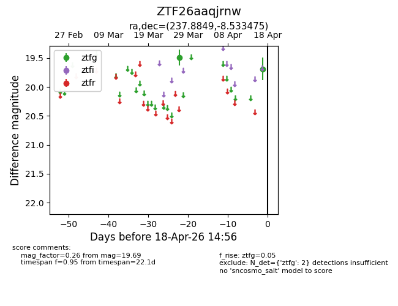
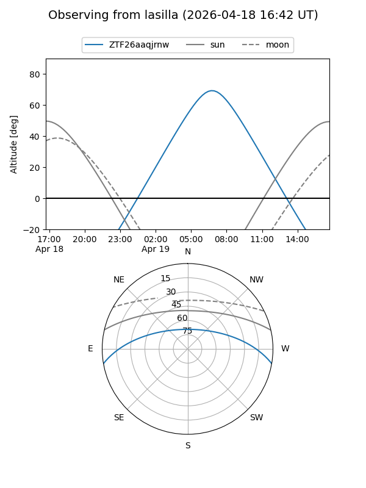
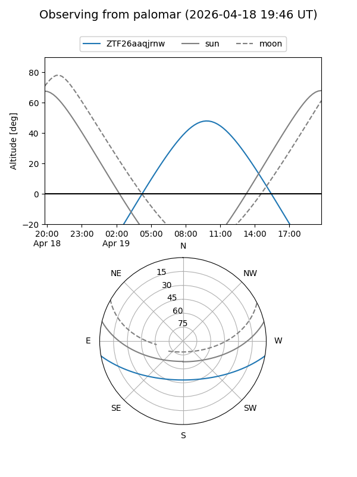

ZTF26aaqjrnw
Target ZTF26aaqjrnw at 2026-04-18 15:02
Aliases and brokers:
FINK: link
Lasair: link
ALeRCE: link
alt names
ZTF26aaqjrnw (ztf,fink_ztf)
Coordinates:
equatorial (ra, dec) = 237.8849,-8.53347
equatorial (HMS+DMS) = 15:51:32.36,-08:32:00.51
galactic (l, b) = (0.1361,+33.67021)
Flags:
Photometry:
last ztfg=19.69
2 ztfg detections
Lightcurve

Visibility


Additional plots